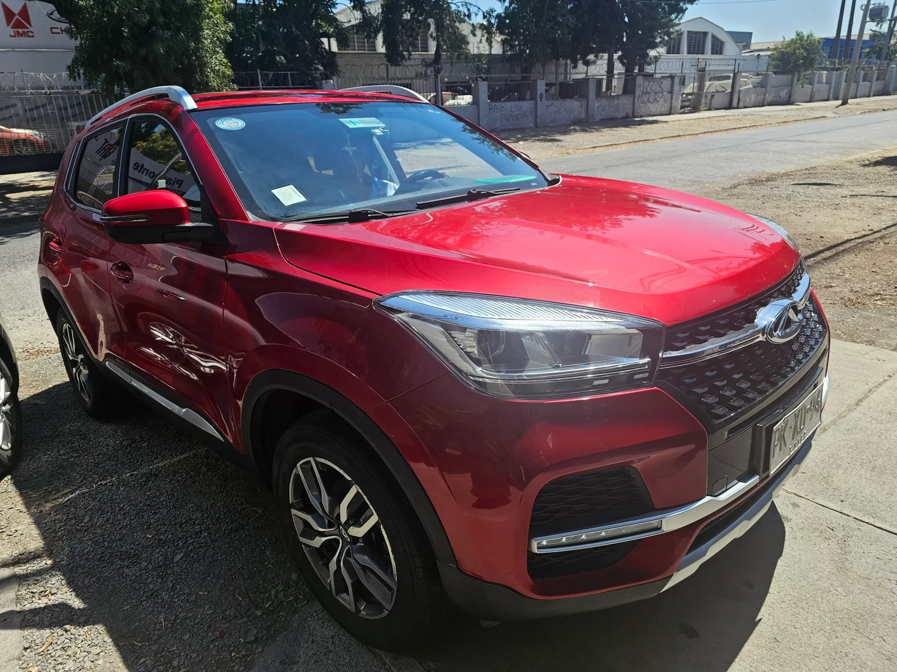
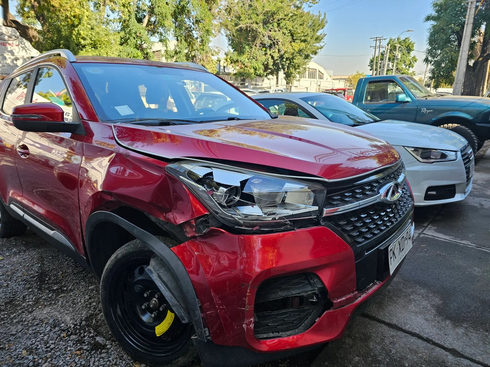

Desabolladura
Preparación de golpes para recuperar la estructura y la forma original de la carrocería, o el cambio de pieza cuando hace falta.
Las Dalias 3270 · Macul
En JRV se especializan en devolver a cada vehículo su aspecto original de fábrica, con un trato claro desde el presupuesto hasta la entrega.

Fotos publicadas por el propio taller, del mismo vehículo antes y después de la reparación.

La lista que publican en su sitio, sin precios: el presupuesto se arma después de evaluar el daño.
Preparación de golpes para recuperar la estructura y la forma original de la carrocería, o el cambio de pieza cuando hace falta.
Nivelación y preparación de la superficie antes de pintar, para un acabado prolijo.
Pintura al horno e igualación del color según el código de fábrica, en una o varias piezas.
Acabado de piezas recién pintadas, o renovación de una pintura desgastada.
Reparación de parachoques, rejillas, molduras y focos, y corrección de la estructura cuando un siniestro lo requiere.
Limpieza, descontaminación, pulido y protección, además de cotización y cambio de repuestos que ya no se pueden reparar.
Casa matriz: Las Dalias 3270, Macul.
Planta de desabolladura y pintura: Las Dalias 2255, Macul.
WhatsApp: 9 6393 0741
También: 9 7735 8024
Mail: automotrizjrv@gmail.com